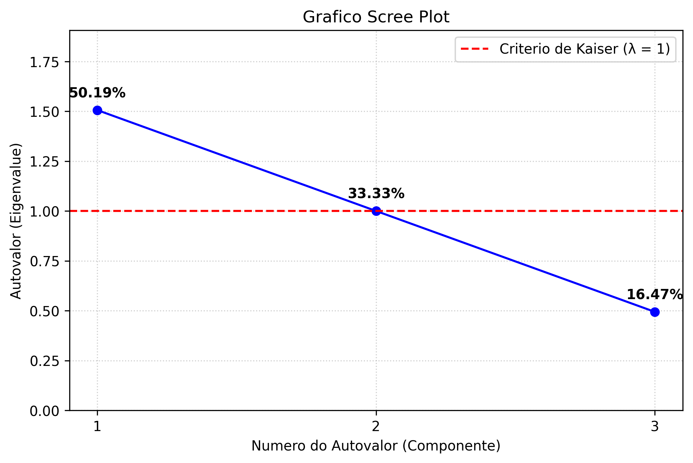
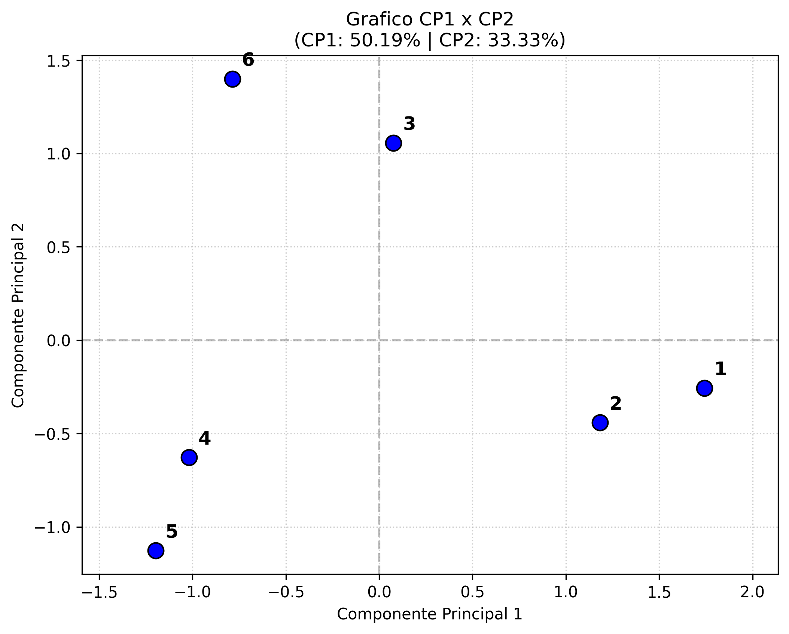
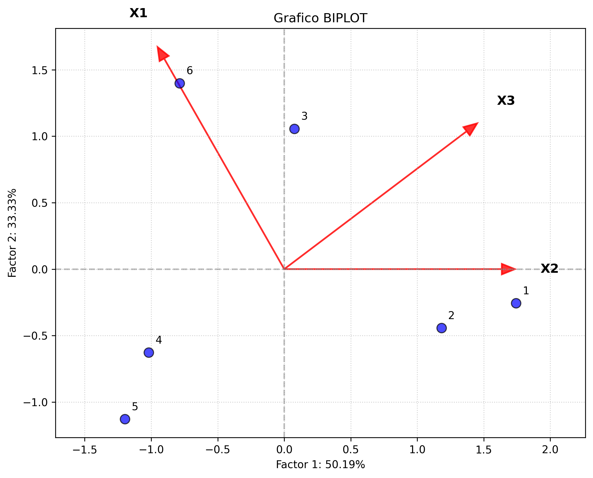

Notas de Estudos: Analise de Componentes Principais (PCA)
Table of Contents
- 1. Introducao
- 2. Dados de Estudo
- 3. Notacoes Matriciais
- 4. Vetor de Medias
- 5. Padronizacao (Standardization)
- 6. Covariancia
- 7. Equacao Caracteristica
- 8. Autovetores (Eigenvectors)
- 9. Equações dos Componentes Principais (Estilo Slide 25)
- 10. Escores dos Componentes Principais (PCA Scores)
- 11. Graficos
- 12. Conclusão
1. Introducao
Este documento sao notas de estudos sobre analise de componentes principais
Criei um csv a partir dos dados de exemplo que o professor utilizou em seus slides pra manter a linha do que o prof explicou
Pra realmente entender trouxe as operacoes matematicas pertinentes ao calculo dos componentes principais.
2. Dados de Estudo
Pra rodar as analises basta clonar esse repositorio e rodar com o comando abaixo. Claro, adaptando os diretorios conforme o seu computador e sistema operacional e nao esquecendo de ativar o venv.
(venv) wgn@fedora:~/WORKING/Projects-Srcs/Projects-Srcs-FzlSoft/curso_estatistica_multivariada/exercicios$ python3 exercicio_0_pca_dados_slide/src/main.py
O trecho que carrega e mostra os dados que vamos utilizar para as notas de estudo estão abaixo.
import pandas as pd from data_io.data_loader import load_pca_data pd.set_option('display.max_columns', 10) csv_path = 'exemplo_pca.csv' data = load_pca_data(csv_path) print(data.head())
=== Passo 1: Carregamento de Dados === Dados originais (primeiras linhas): [[2. 4. 5.] [3. 5. 3.] [6. 4. 3.] [4. 2. 1.] [3. 1. 1.] [6. 1. 4.]]
Nos slides do prof e em livros costuma-se falar em n casos e p medidas/dimensoes/variaveis.
3. Notacoes Matriciais
Acima temos os dados trazidos pela leitura do python, e logo aqui abaixo a notacao matricial:
\begin{equation} X = \begin{bmatrix} 2.0 & 4.0 & 5.0 \\ 3.0 & 5.0 & 3.0 \\ 6.0 & 4.0 & 3.0 \\ 4.0 & 2.0 & 1.0 \\ 3.0 & 1.0 & 1.0 \\ 6.0 & 1.0 & 4.0 \end{bmatrix} \end{equation}Nos slides do prof e em livros costuma-se falar em n casos e p medidas/dimensoes/variaveis.
4. Vetor de Medias
4.1. Operacao Matricial
4.2. Passo a Passo
- Transposta:
- Soma das colunas (XT * 1):
- Media Final:
5. Padronizacao (Standardization)
Para evitar que variaveis com escalas muito diferentes distorcam a analise, aplicamos a padronizacao (Z-score).
5.1. Formula Matricial Global
A operacao para padronizar toda a matriz \(X\) e:
\begin{equation} Z = (X - \mathbf{1}\bar{x}^T) D^{-1} \end{equation}Onde:
- \(X\) e a matriz original.
- \(\mathbf{1}\) e um vetor de uns.
- \(\bar{x}^T\) e o vetor de medias transposto.
- \(D^{-1}\) e a inversa da matriz diagonal de desvios padrao.
5.1.1. Passo a Passo Numérico de como normalizar
O passo a passo a baixo ajuda e compreender a formula matriciais acima
- Matriz Original \(X\) (conforme os dados de estudo):
- (\(\mathbf{1}\bar{x}^T\)) he a matriz de Médias :
Cada linha contém o vetor de médias \(\bar{x}^T = [4.000 \quad 2.833 \quad 2.833]\).
\begin{equation} \mathbf{1}\bar{x}^T = \begin{bmatrix} 4.000 & 2.833 & 2.833 \\ 4.000 & 2.833 & 2.833 \\ 4.000 & 2.833 & 2.833 \\ 4.000 & 2.833 & 2.833 \\ 4.000 & 2.833 & 2.833 \\ 4.000 & 2.833 & 2.833 \end{bmatrix} \end{equation}- Matriz Centralizada (\(X_c = X - \mathbf{1}\bar{x}^T\)):
Subtraímos a média de cada valor correspondente.
\begin{equation} X_c = \begin{bmatrix} -2.000 & 1.167 & 2.167 \\ -1.000 & 2.167 & 0.167 \\ 2.000 & 1.167 & 0.167 \\ 0.000 & -0.833 & -1.833 \\ -1.000 & -1.833 & -1.833 \\ 2.000 & -1.833 & 1.167 \end{bmatrix} \end{equation}- Matriz Diagonal de Desvios Padrão Inversos (\(D^{-1}\)):
Calculamos o desvio padrão de cada coluna (\(s_1=1.673, s_2=1.722, s_3=1.602\)) e montamos a matriz diagonal com seus inversos (\(1/s_j\)).
\begin{equation} D^{-1} = \begin{bmatrix} 0.598 & 0 & 0 \\ 0 & 0.581 & 0 \\ 0 & 0 & 0.624 \end{bmatrix} \end{equation}- Matriz Padronizada (\(Z = X_c D^{-1}\)):
Multiplicamos a matriz centralizada pela matriz de escala. Isso equivale a dividir cada coluna pelo seu respectivo desvio padrão.
\begin{equation} Z = \begin{bmatrix} -1.195 & 0.677 & 1.352 \\ -0.598 & 1.258 & 0.104 \\ 1.195 & 0.677 & 0.104 \\ 0.000 & -0.484 & -1.144 \\ -0.598 & -1.064 & -1.144 \\ 1.195 & -1.064 & 0.728 \end{bmatrix} \end{equation}A matriz ta igualzinha a dos slides do prof
o trecho de codigo do nosso arquivo main.py que produz os dados padronizados he este abaixo
import pandas as pd import matplotlib.pyplot as plt # Carregar dados df = pd.read_csv('exemplo_pca.csv') # === Passo 2.1: Media de cada coluna === means = df.mean() print("=== Passo 2.1: Media de cada coluna ===") for col, val in means.items(): print(f"{col}: {val:.4f}") # Dados Padronizados (X_std) df_std = (df - df.mean()) / df.std() print("\nDados Padronizados (X_std):") print(df_std.head(5).to_string(index=True))
O python tb está gerando a matriz de padronizada igual a dos slides do prof
=== Passo 2.1: Media de cada coluna === X1: 4.0000 X2: 2.8333 X3: 2.8333 Dados Padronizados (X_std): [[-1.19522861 0.67734887 1.35240687] [-0.5976143 1.25793362 0.1040313 ] [ 1.19522861 0.67734887 0.1040313 ] [ 0. -0.48382062 -1.14434427] [-0.5976143 -1.06440537 -1.14434427] [ 1.19522861 -1.06440537 0.72821908]]
6. Covariancia
Como os dados foram padronizados (\(Z\)), a matriz de covariância de \(Z\) é, na verdade, a Matriz de Correlação (\(R\)) das variáveis originais.
O Gemini, explica isso direitinho https://gemini.google.com/share/e072da343836
Esse video tb mostra isso https://www.youtube.com/watch?v=6ard2U5URpU
A fórmula matricial é:
\begin{equation} R = \frac{1}{n-1} Z^T Z \end{equation}6.0.1. Passo a Passo Numérico (Cálculo de \(R\))
- Matriz Padronizada Transposta (\(Z^T\)):
- Produto das Matrizes (\(Z^T Z\)):
Este produto resulta em uma matriz \(p \times p\) (onde \(p\) é o número de variáveis, no caso 3). Os elementos da diagonal principal são iguais a \(n-1\) (que é 5).
\begin{equation} Z^T Z = \begin{bmatrix} 5.000 & -1.388 & 0.000 \\ -1.388 & 5.000 & 2.114 \\ 0.000 & 2.114 & 5.000 \end{bmatrix} \end{equation}- Matriz de Correlação ou covariancia Final (\(R = \frac{1}{5} Z^T Z\)):
Dividimos cada elemento pelo grau de liberdade (\(n-1 = 5\)).
\begin{equation} R = \begin{bmatrix} 1.000 & -0.278 & 0.000 \\ -0.278 & 1.000 & 0.423 \\ 0.000 & 0.423 & 1.000 \end{bmatrix} \end{equation}Segue abaixo o trecho do codigo no nosso main.py que calcula e mostra a matriz de autovalores
print("\n=== Passo 3: Matriz de Covariancia, Autovalores e Autovetores ===") # A matriz de covariancia de dados padronizados e a matriz de correlacao cov_mat = np.cov(X_std.T) print("Matriz de Covariancia (R):") print(cov_mat)
=== Passo 3: Matriz de Covariancia, Autovalores e Autovetores === Matriz de Covariancia (R): [[ 1.00000000e+00 -2.77572601e-01 -3.46361090e-17] [-2.77572601e-01 1.00000000e+00 4.22792893e-01] [-3.46361090e-17 4.22792893e-01 1.00000000e+00]]
Dá a impressao de que a matriz de covariancia gerado pelo script esta diferente da matriz de covariancia nos slides do professor mas dando uma olhada nessa explicacao aqui da pra ver que esta corretissima
7. Equacao Caracteristica
Este video me ajudou a entender essa etapa: https://www.youtube.com/watch?v=MLck7c2Ma8E
No minuto 8:28min ele mostra como chegar na formula que está no slide 9 e 10 do prof
\begin{equation} (A - \lambda I)(X)=O \end{equation}Para encontrar os componentes principais, precisamos resolver a equação característica da matriz de correlação \(R\).
Os autovalores (\(\lambda\)) representam a variância explicada por cada componente.
no video, no minuto 13:30 se apresenta o "polinomio caracteristico" que podemos chamar tambem de equacao caracteristica.
Fazer igual a matriz nula significa que o sistema de infinitas solucoes.
A equação é:
\begin{equation} \det(R - \lambda I) = 0 \end{equation}O calculo do determinante vai gerar uma equacao polinomial pro calculo do dos autovalores conforme demostrado abaixo.
O gemini fez essa conta pra mim, está logo abaixo no passo a passo numerico.
7.0.1. Passo a Passo Numérico (Cálculo dos Autovalores)
- Construção da Matriz \((R - \lambda I)\):
Subtraímos \(\lambda\) dos elementos da diagonal principal de \(R\).
\begin{equation} R - \lambda I = \begin{bmatrix} 1.000 - \lambda & -0.278 & 0.000 \\ -0.278 & 1.000 - \lambda & 0.423 \\ 0.000 & 0.423 & 1.000 - \lambda \end{bmatrix} \end{equation}- Cálculo do Determinante (Polinômio Característico):
Expandindo o determinante para uma matriz \(3 \times 3\):
\begin{equation} (1-\lambda) [(1-\lambda)^2 - (0.423)^2] - (-0.278) [(-0.278)(1-\lambda) - 0] + 0 = 0 \end{equation}Simplificando:
\begin{equation} (1-\lambda) [(1-\lambda)^2 - 0.179] - 0.077(1-\lambda) = 0 \end{equation}Fatorando \((1-\lambda)\):
\begin{equation} (1-\lambda) [(1-\lambda)^2 - 0.179 - 0.077] = 0 \end{equation} \begin{equation} (1-\lambda) [(1-\lambda)^2 - 0.256] = 0 \end{equation}- Resolução das Raízes (\(\lambda\)):
- Raiz 1: \(1 - \lambda = 0 \implies \lambda_2 = 1.000\)
- Raízes 2 e 3: Da parte quadrática \((1-\lambda)^2 = 0.256\):
- \(1 - \lambda = \pm \sqrt{0.256} = \pm 0.506\)
- \(\lambda_1 = 1 + 0.506 = 1.506\)
- \(\lambda_3 = 1 - 0.506 = 0.494\)
- Matriz de Autovalores (\(\Lambda\)):
Ordenamos os autovalores do maior para o menor para definir a importância dos componentes:
\begin{equation} \Lambda = \begin{bmatrix} 1.506 & 0 & 0 \\ 0 & 1.000 & 0 \\ 0 & 0 & 0.494 \end{bmatrix} \end{equation}Os resultados mostram que o primeiro Componente Principal (PC1) explica a maior parte da variância (1.506 de um total de 3.0).
8. Autovetores (Eigenvectors)
Calculos realizados pelo gemini
Os autovetores (\(v_i\)) definem a direção dos novos eixos (os Componentes Principais). Para cada autovalor \(\lambda_i\), resolvemos o sistema:
\begin{equation} (R - \lambda_i I)v_i = 0 \end{equation}8.0.1. Passo a Passo Numérico (Cálculo de \(v_1\))
Vamos calcular o autovetor para o maior autovalor \(\lambda_1 = 1.506\).
- Sistema de Equações:
Isso nos dá o sistema:
- (I) \(-0.506x - 0.278y = 0 \implies y = -1.820x\)
- (II) \(-0.278x - 0.506y + 0.423z = 0\)
- (III) \(0.423y - 0.506z = 0 \implies z = 0.836y\)
- Substituindo y em z:
Substituindo \(y = -1.820x\) em \(z = 0.836y\):
\begin{equation} z = 0.836(-1.820x) = -1.521x \end{equation}Temos o vetor proporcional: \(v'_1 = [1.000 \quad -1.820 \quad -1.521]\).
- Normalização (Vetor Unitário):
Para que o autovetor tenha comprimento 1, calculamos a norma:
\begin{equation} \|v'_1\| = \sqrt{1^2 + (-1.820)^2 + (-1.521)^2} = \sqrt{1 + 3.312 + 2.313} = 2.574 \end{equation}O autovetor normalizado \(v_1\) é:
\begin{equation} v_1 = \frac{v'_1}{2.574} = \begin{bmatrix} 0.388 \\ -0.707 \\ -0.591 \end{bmatrix} \end{equation}E impressionante como essas poucas linhas ja faz todo esse calculo pra gente no python e mostra os resultados. Esse e o trecho do nosso main.py
print("\n=== Passo 3: Matriz de Covariancia, Autovalores e Autovetores ===") # A matriz de covariancia de dados padronizados e a matriz de correlacao cov_mat = np.cov(X_std.T) print("Matriz de Covariancia (R):") print(cov_mat) # Calculo de Autovalores e Autovetores eig_vals, eig_vecs = np.linalg.eig(cov_mat) print("\nAutovalores (Variancia):") print(eig_vals) print("\nAutovetores (Cargas dos Componentes):") print(eig_vecs) # Variancia Explicada tot = sum(eig_vals) var_exp = [(i / tot) * 100 for i in sorted(eig_vals, reverse=True)] print("\nVariancia Explicada Acumulada:") cum_var_exp = np.cumsum(var_exp) for i, (v, cv) in enumerate(zip(var_exp, cum_var_exp)): print(f"CP{i+1}: Individual = {v:.2f}% | Acumulada = {cv:.2f}%")
Autovalores (Variancia): [0.49423288 1. 1.50576712] Autovetores (Cargas dos Componentes): [[ 3.88070835e-01 8.35943810e-01 -3.88070835e-01] [ 7.07106781e-01 -5.92621506e-16 7.07106781e-01] [-5.91101537e-01 5.48815038e-01 5.91101537e-01]]
8.0.2. Matriz Final de Autovetores (\(V\))
Repetindo o processo para os outros autovalores (\(\lambda_2, \lambda_3\)), obtemos a matriz de cargas (loadings):
\begin{equation} V = \begin{bmatrix} 0.388 & -0.836 & 0.388 \\ -0.707 & 0.000 & -0.707 \\ -0.591 & -0.549 & 0.591 \end{bmatrix} \end{equation}Cada coluna de \(V\) representa um Componente Principal. Por exemplo, o primeiro componente (PC1) é formado pela combinação linear:
\begin{equation} PC1 = 0.388(X1_{std}) - 0.707(X2_{std}) - 0.591(X3_{std}) \end{equation}9. Equações dos Componentes Principais (Estilo Slide 25)
tem um erro de calculo cometido aqui pelo gemini que esta diferente do slide
vou ver isso depois Seguindo o padrão de apresentação dos resultados, os componentes principais (\(Y_i\)) são expressos como combinações lineares das variáveis originais padronizadas (\(Z_j\)):
\begin{equation} \begin{cases} Y_1 = 0.388 Z_1 - 0.707 Z_2 - 0.591 Z_3 \\ Y_2 = -0.836 Z_1 + 0.000 Z_2 - 0.549 Z_3 \\ Y_3 = 0.388 Z_1 - 0.707 Z_2 + 0.591 Z_3 \end{cases} \end{equation}Onde:
- \(Y_i\) são os escores dos Componentes Principais.
- \(Z_j\) são as variáveis originais padronizadas.
- Os coeficientes são os elementos dos autovetores (pesos).
10. Escores dos Componentes Principais (PCA Scores)
Os escores são as novas coordenadas das observações no espaço dos Componentes Principais. Eles representam os valores transformados de cada unidade amostral.
A fórmula matricial é:
\begin{equation} F = Z V \end{equation}Onde:
- \(Z\) é a matriz de dados padronizados (\(n \times p\)).
- \(V\) é a matriz de autovetores (\(p \times p\)).
- \(F\) é a matriz de escores (\(n \times p\)).
10.0.1. Passo a Passo Numérico (Cálculo do primeiro escore)
Para a primeira observação (\(u=1\)), o vetor padronizado é \(z_1 = [-1.195 \quad 0.677 \quad 1.352]\).
Calculamos o escore para o PC1:
\begin{equation} F_{1,1} = (-1.195 \times 0.388) + (0.677 \times -0.707) + (1.352 \times -0.591) \end{equation} \begin{equation} F_{1,1} = -0.464 - 0.479 - 0.799 = -1.742 \end{equation}10.0.2. Matriz Final de Escores (\(F\))
Multiplicando todas as linhas de \(Z\) pelas colunas de \(V\), obtemos:
\begin{equation} F = \begin{bmatrix} -1.742 & 0.257 & -0.143 \\ -1.183 & 0.443 & -1.060 \\ -0.076 & -1.056 & 0.046 \\ 1.018 & 0.628 & -0.334 \\ 1.196 & 1.128 & -0.156 \\ 0.786 & -1.399 & 1.646 \end{bmatrix} \end{equation}Interpretando os Resultados:
- Variância: Se calcularmos a variância de cada coluna de \(F\), obteremos exatamente os autovalores (\(\lambda_1=1.506, \lambda_2=1.000, \lambda_3=0.494\)).
- Ortogonalidade: A correlação entre qualquer par de colunas de \(F\) é zero. As novas variáveis são perfeitamente independentes.
- Redução de Dimensionalidade: Podemos agora usar apenas as duas primeiras colunas (\(PC1\) e \(PC2\)) para representar nossos dados, mantendo \(\approx 83\%\) da informação original (\((1.506 + 1.0)/3\)).
Segue o trecho do codigo que gere os scores dos individuos
# Calculo de Autovalores e Autovetores eig_vals, eig_vecs = np.linalg.eig(cov_mat) # Ordenar de forma decrescente pelos autovalores (Variancia) idx = eig_vals.argsort()[::-1] eig_vals = eig_vals[idx] eig_vecs = eig_vecs[:, idx] print("\nAutovalores (Variancia):") print(eig_vals) print("\nAutovetores (Cargas dos Componentes):") print(eig_vecs) print("\n=== Passo 4: Valores Originais com os Escores dos Individuos ===") # O calculo dos escores e o produto matricial dos dados padronizados pelos autovetores scores = np.dot(X_std, eig_vecs) # Criando o DataFrame dos escores organizados (com index iniciando em 1) component_names = [f'S_CP{i+1}' for i in range(len(eig_vals))] df_scores = pd.DataFrame(scores, columns=component_names, index=data.index + 1) # Ajustando o index dos dados originais para iniciar em 1 para alinhar a juncao df_original = data.copy() df_original.index = data.index + 1 # Concatenando os dados originais com os escores lado a lado (eixo 1) df_final = pd.concat([df_original, df_scores], axis=1) df_final.index.name = 'unidade' print("Tabela Completa (Dados Originais + Escores):") print(df_final)
=== Passo 4: Valores Originais com os Escores dos Individuos ===
Tabela Completa (Dados Originais + Escores):
X1 X2 X3 S_CP1 S_CP2 S_CP3
unidade
1 2.0 4.0 5.0 1.742201 -0.256923 -0.784285
2 3.0 5.0 3.0 1.182903 -0.442478 0.596084
3 6.0 4.0 3.0 0.076618 1.056238 0.881298
4 4.0 2.0 1.0 -1.018537 -0.628033 0.334311
5 3.0 1.0 1.0 -1.197155 -1.127605 -0.308141
6 6.0 1.0 4.0 -0.786030 1.398802 -0.719266
Variancia explicada igual do slide 23 do prof
Variancia Explicada Acumulada: CP1: Individual = 50.19% | Acumulada = 50.19% CP2: Individual = 33.33% | Acumulada = 83.53% CP3: Individual = 16.47% | Acumulada = 100.00%
11. Graficos
Aqui estao os graficos gerados a partir da analise de componentes principais:
11.1. 1. Scree Plot (Grafico de Cotovelo)
O Scree Plot mostra a variancia explicada por cada componente principal. O Criterio de Kaiser sugere manter componentes com autovalores (λ) maiores que 1.

11.2. 2. Grafico de Escores (CP1 x CP2)
Este grafico mostra a posicao de cada unidade experimental no novo espaco bidimensional formado pelos dois primeiros componentes principais.

11.3. 3. Biplot
O Biplot combina os escores dos individuos com as cargas das variaveis originais, permitindo visualizar a relacao entre as variaveis e como elas influenciam a posicao dos individuos.

12. Conclusão
A Análise de Componentes Principais permitiu transformar 3 variáveis correlacionadas em 3 novos eixos independentes, facilitando a visualização e interpretação da estrutura de variabilidade dos dados.